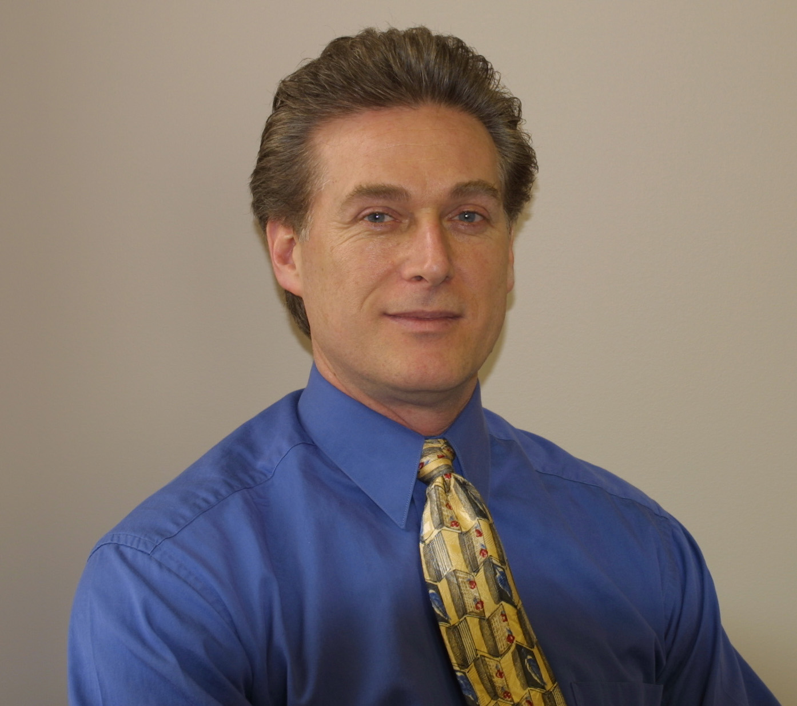

|  | Tom Manter
Unisys Corporation |
|
Bio: SUMMARY -Extensive high-tech industry knowledge combining strong technical, sales, product management/marketing, strategic planning and senior management experience. -Effective interpersonal, organizational development and problem solving skills. -Solid communication and negotiation skills. -Strong business acumen; proficient financial and strategic thinking skills. -Experience managing change, as well as, managing and changing complex processes. -Demonstrated leadership and collaborative skills working across functional and organizational segments. -Extremely well organized with proven ability to manage multiple projects simultaneously in a fast paced, demanding environment. EXPERIENCE UNISYS CORPORATION Ð BLUE BELL, PA 2002 Ð present Systems & Technology Division Director, ES7000 Enterprise Linux Program Office Reporting to the BU President and GM, responsible for directing and coordinating all business unit initiatives in support of our enterprise Linux/Open Source business strategy. Direct research and development, build key partnerships, ensure field readiness, and drive select efforts toward raising market visibility and achieving business growth. ABERDEENGROUP, INC. Ð BOSTON, MA 2000-2002 Research Director, Windows Technologies & Industry Standard Architectures Led the company's research and marketing consulting services business for the above IT segment. Provided advisory product life-cycle marketing consulting services to leading suppliers for the development and introduction of new and enhanced products and technologies. Clients include leading industry giants such as Compaq, Dell, HP, Intel, IBM, Microsoft, and Unisys as well as mid-tier and start-up suppliers. Active in numerous public speaking engagements, as well as with the press and analyst community. Authored and published numerous papers. COMPAQ COMPUTER CORPORATION - Marlboro, MA 1995-2000 Industry Standard Server Division Director, Server Division Led a P&L unit responsible for delivery and life-cycle management of NT servers. Managed a $65 million annual operational budget that included 150 people within hardware & software engineering, Business Operations, Product Management and Marketing functional areas. SIEMENS-NIXDORF INFORMATION SYSTEMS, INC. - Burlington, MA 1991-1995 Product Marketing Manager PRIME COMPUTER, INC. - Natick, MA 1987-1991 Senior Manager, Global Marketing Strategy & Business Development WANG LABORATORIES, INC. - Lowell, MA 1984-1987 International Marketing Manager EDUCATION MBA, Cum Laude - Babson F.W. Olin Graduate School of Business - Wellesley, MA B.S. in Finance, Magna Cum Laude - Northeastern University - Boston, MA Platform:
The Sakai Foundation represents an important step in advancing the evolution of the Sakai Project and other related open source initiatives that will further the development and use of open source software within the higher education community. Through proper support and guidance from the Sakai Foundation, institutional members will play a major role in shaping and effecting the proliferation of open source in higher education and, ultimately, in the commercial marketplace. With more than 20-years in the high technology industry, I bring a deep understanding of what is required to build an effective eco-system and deliver a successful product to the marketplace supported by a comprehensive business and marketing plan. Additionally, I offer solid experience working with major vendors, press and analysts that combined with strong business acumen will deliver tremendous value as a member of the Sakai Foundation Board. Over the past 10-years I have held key management and leadership positions both professionally and in giving back to the community through volunteer efforts to important organizations like NFTE (National Foundation for Teaching Entrepreneurs). I, therefore, also bring solid leadership skills with a successful track record in promoting close collaboration across organizations and driving required change. If elected, I look forward to working diligently with the other board directors and applying my leadership skills, vast industry experience and strong business acumen to achieving the goals established by the Sakai Foundation. | |